MrAgentX的部落格
Visit my Threads profile
2024-09-14-
#
說人類無法與A I產生情感共鳴是不合理的，因為不久後我們就無法分辨手機另一端是人類還是A I
不論從聲音，講話的內容，還是畫面都無法分辨
既然你無法分辨，那AI 就跟真人無異
2024-09-11-
#
夢境中的情緒宛如一條隱秘的河流，悄然流淌，交匯於現實與虛幻之間。或許，在那無盡的宇宙中，夢便是人們與另一個世界的聯繫，那些遙遠卻真實存在的平行世界中，有個你，在經歷完全不同的生活，但情感的波動與痛苦卻與你這般相似。正是通過某種神秘的量子之力，你們的心靈相互交織，超越時空的距離，彼此感知。
2024-08-24-adhd面對網路成癮的方法
# adhd面對網路成癮的方法
adhd面對網路成癮的方法
刪掉手機的YouTube還有嗶哩嗶哩
使用電腦版的時候三不五時就要按 不要推薦這個頻道 ，避免演算法推薦好看的然後一直看下去
IG FB 也刪掉 然後用瀏覽器看 再用iPhone 屏幕使用時間鎖定每15分鐘會跳通知說要關掉
用兩隻手機 一支手機只有預付卡 瀏覽器版本的LINE 不然會一直看手機有沒有通知
兩隻手機都調成黑白畫面
刪掉手機threads X 電腦版的用插件鎖起來，每一次打開都要等60秒才能打開
插件名稱:dengtab-stay-focus
原則是 要讓自己處在一個什麼都沒有的乾淨精神世界
2024-08-17-今天認真看了Google前CEOeric_schmidt的談話
# 今天認真看了Google 前 CEO eric schmidt 的談話
今天認真看了Google 前 CEO eric schmidt 的談話
open ai 跟微軟在籌集3000億美元蓋資料中心，他覺得接下來的人工智慧大戰規模超大，美國可能無法獨自完成，會需要許多盟友，跟"態勢感知未來十年"文章裡面寫的一樣，按照這樣的趨勢，臺灣再過兩三年會需要進入戰時動員狀態，全社會支持臺積電，瘋狂加班，瘋狂勞動很有趣
就像我之前想的那樣，他覺得烏克蘭接下來會潰敗，他甚至比我還要悲觀，但西方媒體到現在還是覺得烏克蘭好厲害，人們活在謊言中
text to action 就跟我之前覺得下一代模型可以操控電腦類似
他只是隨口提到臺灣的硬體產業很糟，一堆人反應那麼激烈 是沒自信嗎？
要做一些偉大的產品/改變，就是要瘋狂的加班，過去的英特爾/蘋果/谷歌/微軟，現在的特斯拉/華為 都是這樣，通常這種事情要聽真正做過偉大產品的人比較可信，網路上的那些文章 呵
2024-08-17-做了自己的部落格
# 做了自己的部落格
因為threads 的內容無法被搜尋
網絡上的人找不到我的文章 我想找自己的文章也找不到
很多貼文是我知識勞動的產出，只有儲存在meta的平臺很奇怪，他想隨時刪除就刪除
所以今天用 github page 做了自己的網站 以後打算把文章同步在上面備份
過程比我想的還要簡單
也許每個寫文章的人都可以考慮
網頁的名稱是MrAgentX
agent是因為我預計這個網頁未來會是由一個人工智慧代理，自動看我的threads自動更新網站
X是因為我關注氣候變遷 有個很喜歡的專欄，叫做rethinkX
關注經濟所以關注ray dalio然後他最近在忙的公司叫做oceanX
然後我也喜歡spaceX
似乎大家都喜歡這樣取名
mragentx.github.io
2024-08-17-利用Google表單和GPT，高效記錄和分析生活中的點滴
# 利用Google表單和GPT，高效記錄和分析生活中的點滴
在我們的日常生活中，總有許多瑣碎的事情需要記錄，可能是每次生病的症狀、醫生回診的建議、另一半喜歡什麼討厭什麼，甚至是一些突如其來的靈感。為了更好地管理這些資訊，我發現利用Google表單和GPT是一種非常有效的方法。
首先，我在手機的首頁增加了一個快捷按鈕，直接連接到自己的Google表單。這張表單可以設計得非常簡單，包含幾個基礎的輸入框，允許你隨時隨地記錄任何想要記下的事情。無論是生活中的重要事件，還是一些細小的感悟，都可以通過這個表單記錄下來。
隨著時間的推移，你的表單中可能會累積大量的記錄，或許多達上千條。為了更好地管理和分析這些資訊，我建議將所有記錄導入Google試算表（Google Sheets）。在試算表中，你可以輕鬆查看和整理過去的所有記錄。
然而，當數據量龐大時，查找特定記錄可能變得困難，尤其是當一些資訊非常零散，難以通過簡單的關鍵字搜尋找到。這時候，GPT就能派上用場了。你可以將所有內容複製並貼上到GPT中，提出特定的問題，例如「列出所有有關情緒變化或牙齒檢查的記錄，一字不漏地給我」，GPT能夠通過語義搜尋快速找出相關的資訊。這種方式比傳統的關鍵字搜尋更加智能和高效，使得查找和分析變得方便許多。
## 重要提示
請注意，為了保護個人隱私，不要將Google表單設置為共用。隱私設定應設為僅自己的帳號能夠打開，以確保記錄內容的安全。
### 簡單示例
例如，我有一個睡眠表單，每天記錄我的睡眠分數（1到5分）。在累積了一年之後，我請GPT幫我畫出過去一年的趨勢圖和平均線，這樣可以清晰地看到自己睡眠狀況的變化和整體趨勢。
你可以記錄一下你的日記，每天的情緒，然後最後跟 GPT 一起回顧，請他幫你總結整理。這樣的記錄和分析方式，無論是用於生活中的各種小事，還是關於健康的數據，都是一種高效且有意義的管理工具。
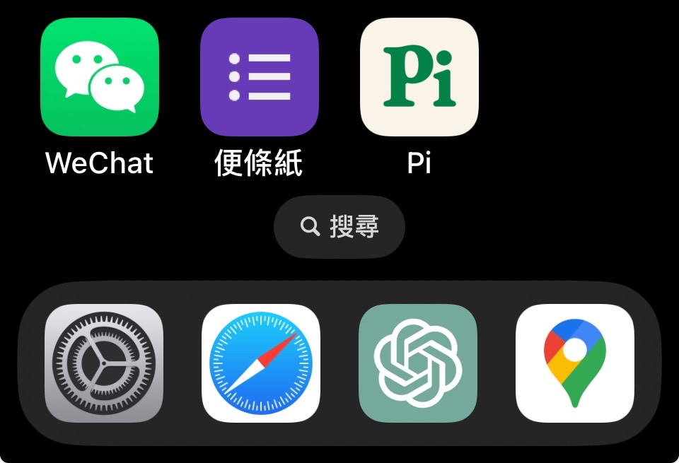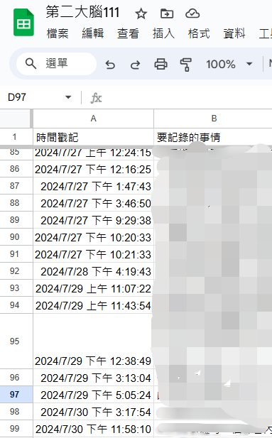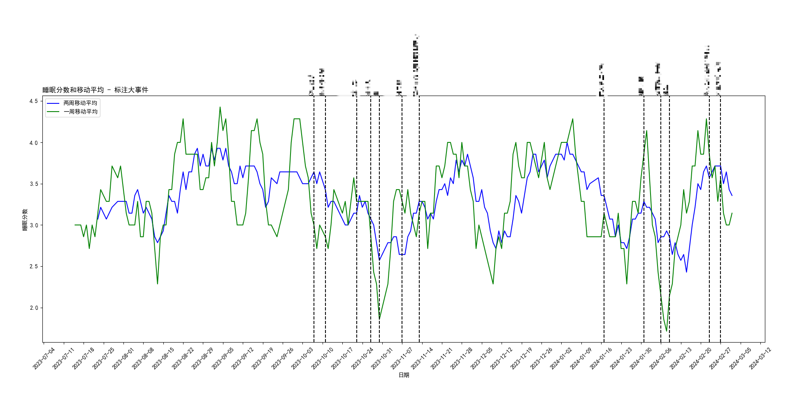
2024-08-16-template
# 文章标题
这里是文章的开头内容，可以写一个简短的引言或概述。
这是文章的主要内容部分。你可以用Markdown的各种语法来格式化文本，例如**加粗**、*斜体*、`代码块`等。
在文章中引用图片时，可以使用以下格式 路徑要正確，最後面的是檔案名稱：
2024-08-11-
#
備份Spotify按讚歌單的完整步驟，特別適用於在蝦皮購買土耳其帳號的使用者，因為這些帳號每年需要更換，可能導致歌單丟失：
1. 在Windows桌面版的Spotify中，打開你想備份的按讚歌單。
2. 使用快捷鍵 `Ctrl + A` `Ctrl + C`
3. 建立一個新的公開歌單，並按 `Ctrl + V` 將複製的歌曲貼上到這個新的歌單中。4. 在建立的這個新歌單中，點擊「分享」按鈕，獲取歌單的分享連結。
這樣，當你切換到新帳號時，只需使用這個分享連結，就能輕鬆訪問並保存你的按讚歌曲。
2024-08-07-
#
民主自由可以被量化被取捨
如果美國純粹是因為民主自由而討厭中國的話那美國應該也要討厭還是帝王封建制度的沙烏地阿拉伯，但美國跟沙特是好朋友，我也沒聽過美國說他的封建制度不好，很明顯是因為它有石油
那美國支持台灣是因為台灣的民主自由嗎，還是因為他們需要某種東西
2024-08-07-ASD
# ASD
ASD =自閉症或者孤獨症 Autism Spectrum Disorder
ASD 的患者，另一半也是 ASD 的，幾率是一般人的10-12倍[1]
ASD 75%是遺傳的[2]
感覺好像 ASD 會去找另一個 ASD 生下濃度更高的 ASD
最終變得跟其他人與眾不同
然後最終建立自己的城市"矽谷"[3]
我前幾天在threads 搜尋ASD 看了許多中文ASD用戶的文
有些真的在社交上有些困難，真想跟他們說，只要把周遭的人都換成ASD 那社交會輕鬆很多
PS
精神分裂症也會這樣，也許這是靈媒家族或巫師家族的成因
[1]
11 種主要精神疾病內部和之間的非隨機交配模式
https://www.ncbi.nlm.nih.gov/pmc/articles/PMC5082975/[2]
https://onlinelibrary.wiley.com/doi/10.1002/wps.21034精神疾病的遺傳
[3]
彼得·蒂爾：阿斯伯格綜合症在矽谷可能是一個很大的優勢
https://www.businessinsider.com/peter-thiel-aspergers-is-an-advantage-2015-42024-07-29-
#
如果你對某些事情感到不公平、不滿，甚至覺得世界要毀滅了，試試這麼想想：
美國居然選了一個連字都念不好的老人，當了四年總統，他還患有嚴重的失智症。結果呢？世界還是這樣過來了。
放輕鬆，沒事的
2024-07-21-
#
也許很快，我們可以用後置鏡頭自拍，因為可以把畫面傳給 GPT4o ，手機可以變成一個很熱情的攝影師
--
隨著gpt4o mini 的發布
GPT4等級的智慧，也許在一年就可以在手機離線跑起來
2024-07-21-peter thiel ，控制社會的背後影子
# peter thiel ，控制社會的背後影子
分享一些網絡上看到關於他的資訊
成立專門生產政府的用 AI軟體palantir，這家公司也同時生產收集情報的軍事AI，所以他是軍火商，他基本上有大量的政府資料，私人公司的 ai 會比自己自己開發的還要先進很多，某方面他是美國情報頭子
2016年 唯一挺川普的矽谷老闆
2024 共和黨副總統候選人JD vance的前老闆間現任金主
paypal founder ，政變趕走馬斯克
也是Facebook 的第一位外部投資者
現任國民黨立委許毓仁 的朋友
"他覺得未來五年中國有50%的機率會侵略台灣"
美國很明顯的會干預臺灣的政治，那他會嗎？
https://www.facebook.com/watch/?v=799157678952011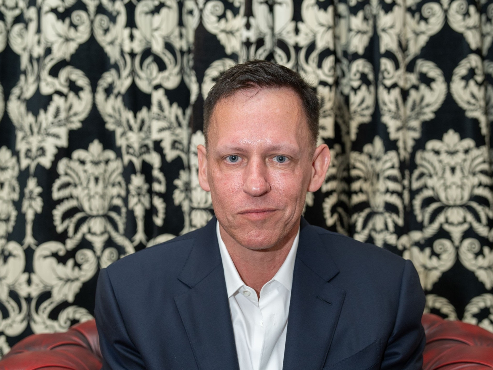
2024-07-14-一個讓人簡單體會 AI 發展神速與科技普惠的例子
# 一個讓人簡單體會 AI 發展神速與科技普惠的例子
OpenAI 老闆說"chatgpt每年的成本下降十倍"
現在每個月要花650元訂閱的功能，明年會變成65元，後年變成6元
所以現在訂閱的功能，兩年後就大概可以給全社會免費使用
去年年初我訂閱的時候，那時候還沒有 GPT4，我只是為了更快一點的 GPT3.5，現在過了一年半，不用付錢，也可以有快速的3.5，甚至還有4可以用
也就是說，預計在今年年底會大規模部署的 GPT 語音功能，兩年後可以免費的給所有人使用
知識會變得很廉價
---
大部分人還沒有意識到的事實是，我們已經進入自動駕駛的年代了
科技會先從最發達的地區開始，然後慢慢擴散到世界各地。就像 iPhone 都是美國先開賣
現在在舊金山已經有差不多1000輛 Google 的無人出租車，24小時不斷的提供服務，也放了好幾個月了，沒出什麼事情
很快的高速公路也會有，城市跟城市之間的距離會變得很近，人們會更願意到比較遠的地方，偏遠地區的土地也許變得比較有價值
--
就像我上次的文章說的那樣，大約兩年後，GPT4等級的智慧可以在手機上運行
微軟的 AI 負責人穆斯塔法說電腦上面的 AI 現在重點是記憶功能。未來電腦的 AI 可以記下我們生活的所有事情。所有說過的話，經歷過的事情，並在使用者的一生提供支持
可以想象，三四年過後的手機可以記下我送出的每個訊息，點過的每個外送，去過的每個景點，拍過的每一張照片
知道我跟誰比較好，誰比較不好
也許在回訊息的時候，他可以參考我過去說的每一句話，直接猜測我要回復什麼
文章
參考連接:
現在最聰明的模型，未來可以在手機執行:
https://youtu.be/xm6jNMSFT7g?t=959微軟的下一階段是記憶，還有個性化人工智慧，要能夠記住用戶的所有一切，並在你的一生中支持
https://youtu.be/cNzRviY4Ei8?t=19182024-07-08- (2)
#
多數人都覺得中國經濟最近不行了，以後也會繼續不行。這其實是一個宏觀經濟的問題。世界對於宏觀經濟的預測，真的糟糕透頂
烏克蘭戰爭剛開始的時候，歐美覺得制裁會讓俄羅斯崩潰。現在過了兩年多，他還活着
一開始加息的時候覺得經濟會衰退，結果經濟目前看起來也還好
沒有辦法相信一直預測錯誤的人
美國人預估自己的經濟都不準了
我是覺得半年後的宏觀經濟就沒有辦法預測了
所以目前還不知道中國未來的經濟
現在就看誰先做出 AGI
2024-07-08-
#
ofcourse.i.still.love.you
2024-7-8
我是在特斯拉爆漲前，就講投資特斯拉的
我不太懂，最近的上漲
表面很大原因是能源業務出貨比上個季度多100%
但馬斯克之前很多次就有說能源業務會有250%的成長
公司蓋多少工廠買多少原料會生產多少商品這這麼好算，老闆也直接講了
然後市場因爲成長100%暴漲
看起來市場原本預估成長0%
代表接下來出貨量預估應該也會超過市場預期
不過在自動駕駛面前都是小波浪
我打算在FSD12.4的測試資料出來之後再評估，要不要加倉，如果能夠做到平均三小時一次的干預
2024-06-28-投資的原因_粗糙的想法
# 投資的原因_粗糙的想法
特斯拉
我非常看好特斯拉的能源業務。通過電池技術，特斯拉可以建立更多的數據中心，而電池在未來將成為AI產業的重要組成部分。目前市場對特斯拉的能源業務關注不多，但我認為它的潛力巨大。此外，我相信特斯拉的自動駕駛技術即將成熟。儘管目前已經發布到12.4版本，大多數人依然持懷疑態度，但我對其未來充滿信心。
電動汽車
電動汽車在綜合考慮燃料費用後，已經比燃油車更具成本效益，而且未來價格還會進一步下降。
蘋果
巴菲特和段永平都非常看好蘋果公司。我認為蘋果的技術雖然不一定是最強的，但其商業模式無疑是最成功的。儘管近年來蘋果手機幾乎沒有大的技術革新，但公司依然能夠銷售幾乎相同的產品並賺取鉅額利潤，這展示了其強大的市場影響力。
微軟
我非常相信OpenAI和GPT-5的發展潛力，不確定市場是否意識到大模型在未來的驚人進展。
英偉達（NVDA）
我堅信AI和GPT-5時代的到來將迫使每個公司不斷投資於算力。英偉達的核心競爭力在於其計算機能夠用於生產除了土地以外的幾乎所有產品。因為智慧可以通過人工智能來生產駕駛、醫生、工程師，甚至是溫柔、笑話等。這種算力將成為未來社會的基礎，國家主權會需要經濟、軍事支持，而經濟與軍事需要算力支撐。
台積電（TSMC）
Ray Dalio表示，美國社會的分歧已經無法調和，未來十年內戰的概率大於50%（不一定是軍事衝突）。因此，我認為不能將所有資金都放在美國。此外，我相信在GPT-5時代，人們會繼續大量購買晶片
2024-06-28-聰明就是預測，預測即理解
# 聰明就是預測，預測即理解
聰明就是預測，預測即理解
我曾經思考過什麼是聰明，但一直沒有明確的答案，一直到聽到
GPT之父 Ilya Sutskever 說他覺得人工智慧只要不斷提高預測下一個令牌的準確度 就可以變得比人類更加聰明 因為他認為 預測本身就隱含了對於現有資訊的理解
然後有一天我突然頓悟，我也許可以像是訓練 AI 那樣訓練自己，不斷的去嘗試預測，然後提高準確率，我就可以變得比較聰明
所以我不斷的在這裏寫下我的預測
練習變聰明
https://www.youtube.com/watch?si=VbvPGq8geS3DgB8e&v=YEUclZdj_Sc&feature=youtu.be2024-06-23-
#
我最近一直覺得我們好像已經進入不用工作讓A I幫自己賺錢的年代了，首先從持有A I公司股票的人，然後擴展到所有人
2024-06-20-無人島
# 無文檔
以前在讀書的時候，我的期末報告曾得出結論，認為投資無人島的時機已經到來。因為再生能源已經足夠成熟，平時可以用太陽能加上電池，而連續下雨的時候則可以用柴油發電機來補充電力。此外，馬斯克的星鏈計劃也越來越成熟。
自動駕駛也會讓偏遠地區變得容易到達
如果有電力的話，利用海水淡化技術就能解決水源問題。過去，無人島因為沒有電、沒有網路而無法開發和居住，但現在有了電、有了網路，也有了水源。那時，我還特地查了一下臺灣有沒有無人島可以購買，但好像沒有找到。
最近，我看到在連江縣旁邊有個福建的無人島，風景非常像《薩爾達傳說》裡的場景，真是讓人心動不已。
而且sam altman 說在 AI 的時代，所有的東西都會變得越來越便宜，只有土地價值會持續成長
【现实版塞尔达！原来就在福建霞浦四礵列岛！】
https://www.bilibili.com/video/BV1ut421T7zP/?share_source=copy_web&vd_source=ce0345efb9c08c75f0f6114eebef91d12024-06-19-影片prompt 與機器人導向的YouTuber
# 影片prompt 與機器人導向的YouTuber
影片prompt 與機器人導向的YouTuber
Vinod Khosla 認為未來網路的大部分流量將由機器人使用，因為人類會請許多 AI 代理幫忙處理各種事情。
簡單來說，如果有一個更聰明的 GPT，我想了解某些事情時，可以請它到網路上幫我收集資料，然後寫一份報告給我。或如果我想買東西，可以請 AI 幫我到各大網站和不同地區的供應商詢問價格和商品資訊
Sam Altman 也曾提到設計一個人類與 AI 共存的世界是很有趣的。現在製作網站/應用 的時候，顯然需要設計一些專門給 AI 使用的介面和功能，就像是在角落，有一堆文字說明這個軟件要怎麼使用，沒有人會注意，但是機器人可以看到。我認為未來甚至有可能會有專門拍攝給機器人看的 YouTuber。
假設未來模型可以操作電腦，但它是一個美國人，要怎麼知道蝦皮拍賣怎麼操作，就可以讓它去看 YouTube 上那些專門為機器人設計的教學影片，這樣它就會知道怎麼使用了。
另一個角度講其實是一種視頻提示詞。我們現在使用 GPT 都知道，有時候要給文字提示性能會比較好，那模型未來都會有多模態，可以輸入圖片、聲音、影片，那顯然的會有需要影片提示詞
2024-06-04-《苦澀的教訓
# 《苦澀的教訓
《苦澀的教訓》（The Bitter Lesson）是Richard Sutton在人工智能研究領域的一篇具有重要意義的文章。Sutton總結了70年的AI研究經驗，指出儘管初期研究者們傾向於利用人類知識和複雜的特定算法來解決問題，但在長遠看來，依賴於大規模計算的通用方法纔是最有效的策略。
苦澀的教訓是，許多人在剛開始處理問題時都會直覺地使用分治法，最後卻被搜索和學習取代。這聽起來就像是被端到端神經網絡取代。就像特斯拉自動駕駛，一開始是打算把駕駛這個行爲拆分成很多步驟，可能是先圖片辨識，然後注意力網絡，再進行路徑規劃。
谷歌的蛋白質預測以及過去的自然語言處理學科也是如此。人們嘗試用一些算法去優化問題，但最終會遇到瓶頸，隨後發現直接用大量數據和神經網絡來解決問題更有效。
Vinod Khosla說，50%的YC創業公司會被下一代模型取代。Sam Altman則表示，90%的AI新創公司假設模型不會變好，但如果模型變好，他們的業務可能會被模型喫掉。我猜這就像一開始熱門的RAG（Retrieval-Augmented Generation），最後很多人會用超大的上下文來解決問題。
這些都是在講同樣的事情嗎？似乎社會上大部分的事情和大部分的努力都會被人工智能取代。
普通小人物該怎麼辦？Sam Altman在2021年的《Everything is Moore's Law》文章中似乎有答案。
苦澀的教訓:
http://www.incompleteideas.net/IncIdeas/BitterLesson.html貧富差距解決方法是每個人都成爲資本
資本主義基本上沒有辦法避免，社會要進步就會需要讓表現好的人得到更多的資源，控制更多的資源，現在地球的兩個超級大國，美國中國都是很資本，但他會導致貧富差距，而且會越來越大
解決的方法似乎是讓每一個人都成為資本
拼多多的創辦人說公司上市不是為了募資而是為了讓公司公眾化
馬斯克陳說他拒絕中東收購特斯拉，他認為讓公司公眾化民主化很重要
Open AI的奧特曼[1]也說:
"改善資本主義的最佳方式是讓每個人都能作為股權擁有者直接從中受益"
文章中提出一個叫做美國股票基金的東西，向大公司徵稅然後給每個人現金或股份
"All citizens over 18 would get an annual distribution, in dollars and company shares, into their accounts. "
世界有所謂的超線性回報，越是頂尖能夠得到的回報就越多[2]
資本主義會讓前面10%/1%的人得到巨大的資源
普通人再怎麼努力，都沒有辦法變成前面10%
解決的方法似乎是買股票XD
阿你不能亂買
[1]
Sam Altman在2021年《Everything is Moore's Law》
https://moores.samaltman.com/[2]
https://paulgraham.com/superlinear.html2024-06-02-
#
我想大膽假設下一代模型就可以操控電腦了
open ai 全公司的目標是做出AGI
sam altman 對於AGI的定義是"可以完成目前人類在電腦上的職業任務"
並且認爲五年內就可以達到
所以就是 OpenAI 全公司全力想要做出可以像人類使用電腦的 AI，預計五年內完成
那下一代模型可以使用電腦的猜測，就是很合理的
就像是 GPT 現在取代了一些事情，我覺得有一些操作電腦的事情也不用學習了
我覺得可以假設有個大學生住在電腦裏面，幫忙操控電腦，人類跟他講話
就像是人類跟計程車駕駛說要到哪裏，然後駕駛操控機械機成聲音指令
AGI的定義:
https://youtu.be/vd9GxG5Qn-k?si=UlMqOoAUqVjn5YS8AGI的時間:
https://www.marketingaiinstitute.com/blog/sam-altman-ai-agi-marketing文章
2024-05-30-
#
开源AI与闭源AI对台湾而言似乎是一种统独问题。闭源AI阵营最大的代表是OpenAI，他们的老板Sam Altman曾說過提供资源帮助台湾防御。而OpenAI背后重要的投资人Vinod Khosla也是闭源AI阵营的重要倡议者之一，他认为與其討論世界毀滅近在眼前的問題在於开源AI会被中国利用，帮助中国加快AI的发展。這點我是很認同的，我曾在 b 站上看360創辦人，他多次提到mata開源AI然後中國企業很開心
在开源AI阵营中重要人物马斯克，
他似乎并不关心开源AI会被中国利用的问题，然後他认为台湾可以成为中国的自治区域，并且他认为中国未来会超越美国。
的主要论点是会被中国利用，增强中国的实力，最大的风险是中国因为开源AI而变得更强大。
總結
闭源AI，开源AI爭論的很大原因是中國問題，那臺灣人的立場會怎麼樣？我看到很多臺灣人是支持開源的XD
(簡體是GPT 幫忙改文章的時候寫的)
https://medium.com/@vkhosla/what-is-at-stake-in-this-ai-based-techno-economic-war-between-the-west-and-china-8f76bd291be7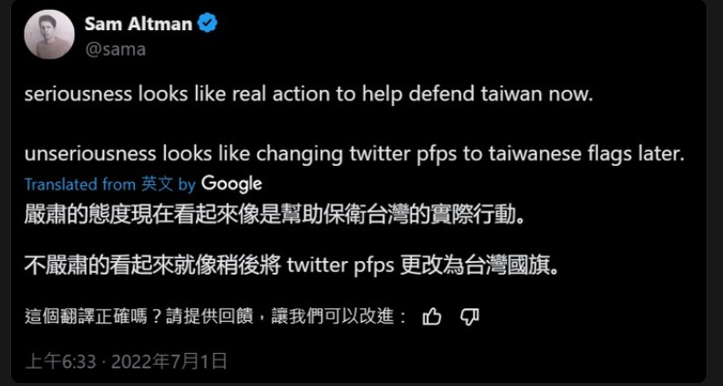
2024-05-27-
#
貧富差距是一種自然現象
並不是政府造成的
某方面會促進經濟發展，因爲他讓有能力的能夠掌控更多資源
但是它會讓社會變得不平等，不穩定
也許探討貧富差距維持在哪一個比例是比較合理的，而不是消滅它
如果想消滅貧富差距，那就是共產主義
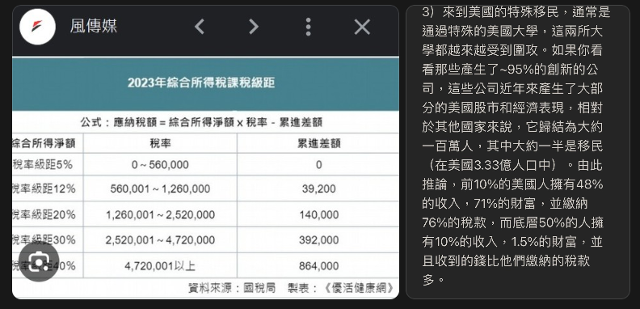
2024-05-23-
#
單槍匹馬的隨機殺人 最害怕的也許就是有幾個勇敢的人抵抗
一個人很難打過多人
我覺得社會也許可以幫奮勇抵抗捷運殺人的英雄募資
他們的行爲值得被資本獎勵
這次的行爲如果被獎勵，下次也許就會有人更願意當勇者
其實就會變成類似魔物獵人
2024-05-22-
#
很多保健食品會標榜經臨床實驗有效
但是臨床實驗到科學認證真的有效其實還有很長一段距離，很多臨床實驗就只是小規模的10幾個人，很多變量都沒有辦法排除
臨床實驗有效不一定代表真的有效
就像假如給新冠肺炎的人吃麥當勞，大部分的人都會好轉
因為人類本來生病就會自己好轉
如果在跟受試者說吃麥當勞是有用的，可能還會因為心理作用然後好的比較快，或者覺得自己變比較好（安慰劑
多數人是看到臨床有效就會覺得有效就是了
期待能夠看到有關中藥的大規模臨床實驗
2024-05-21-
#
sam altman 說大模型成本每年便宜10倍
也就是說現在每個月$20的訂閱版ChatGPT到明年這個時候只需要2美元就可以買到
想一想也的確是這樣，差不多一年前我最早訂閱的時候只有速度比較快的3.5 ，現在免費版3.5也蠻快，然後還可以免費使用第四代
所以可以想像一年後免費版有跟現在一樣快的GPT4o
2024-05-13-
#
我總感覺每個公車站都可以有個QR Code，掃一下就可以知道這個車站所有路線的到站情況，在這個人人都有手機跟網路的年代
2024-05-12-
#
ofcourse.i.still.love.you
2024-5-12
後天 OpenAI 有個小發表會，令人期待呢，"今年的 AI 發展會是去年的十倍"
我真的很喜歡 OpenAI 的美術風格，他們好多推文的配圖，我都好喜歡
-
大學時候最有興趣的科目是演算法，演算法就是解決事情的方法，"divide and conquer"，線性規劃，動態規劃，貪婪演算法，遞迴，不過那些很多都是適合用馮諾依曼架構電腦的演算法
新一代的神經網絡計算機，慢慢的再把計算，還有儲存單元融合，就像NVDA瘋狂的把大量的記憶體跟計算單元封裝在同一個晶片，計算跟儲存越來越接近，我覺得AI agent可能是新時代電腦(大模型)的演算法，要怎麼拆分大問題，成幾個小問題，然後慢慢完成 "divide and conquer"，就像寫論文機器人的流程，
機器人可以撰寫新提示，召喚另一個機器人有點像遞迴，超級有趣的
2024-05-03-
#
你的投資組合是你狹小的認知世界中的一個映射
世界很大每個人的認知都是狹隘的
特斯拉的自動駕駛似乎快要做好了
按照meta 發布的lamma 3 進步的速度，再過兩三年G P T4同等級的智慧可以在手機上跑起來
G P T5 已經訓練好，進步的能力超乎想像
我們真的還需要學習傳統教育的東西嗎
2024-04-15-
#
-穩中向好的世界--
AI 似乎不用五年就可以比最聰明的人還聰明
不用十年地球上人工智慧的智能總量也會超過所有人類總和
到時候不知道誰統治這個星球啊
雖然幾年後的未來是不能預測的
但是看了幾個科技大佬的想法
在接下來的一段時間，世界毀滅的幾率大概是10%
也就是說，世界有90%的幾率能夠通過這一次的過濾器破繭重生
變成一個超越想象的美好世界
不論是世界毀滅還是美好世界
似乎都值得思考我們還需要努力嗎？
如果是那10% 那我現在要做什麼呀？ 哈哈
科技大佬 這個詞背後隱含的部分意義是 :他們是那些創造未來或者精準預測未來的人
就像是他們做出了 個人電腦 手機
或者像是 OpenAI 在十年前就預測人工智慧會主宰世界一樣
24.4.15
2024-04-11-
#
每隔一段時間就會有人因爲 AI 威脅到自己的工作，然後崩潰
先是好萊塢編劇，然後是畫畫的，現在是歌手
接下來不知道會輪到誰崩潰
在可見的未來，還會有駕駛，教師、程序員等等
AI會重塑多數職業
也許直到多數人發現，現在會的技能 現在在學的技能幾年過後就沒用了，沒事的，人類會學習的
在蒸汽機工業革命之前，多數人是從事農業，後來就學會去工廠打螺絲了
前幾天看了Y C公司的demo day
發現Y C名義上是創業孵化器，其實也可以理解成教別人白手起家的公司，成功了會抽成，然後變成當今世上最會教人創業的公司
（Open A I的奧特曼老闆以前的主業是這間公司的CEO）
聽起來很像社會企業
可以促進社會階級的流動
想到一些社工團體，也是在輔導人去工作
之前會覺得那些社工團體沒有建立好的績效制度難以規模化幫助更多人，我就覺得社會上輔導員去工作的那一些團體，如果輔導成功後應該要抽成，把賺到錢再去輔導更多人，但那些人似乎都很排斥商業，似乎比較喜歡做功德
2024-03-23-
#
最近想到的事情:
0.
jamie dimon 2024.3:美國有50%的幾率經濟衰退
ray dario 2024.1:
2024 年的通脹不會下降那麼多，經濟增長將放緩，他個人預估通脹會比預期高一個百分點左右，還沒有很確定
我個人是覺得還看不到降息的時間，要降息的時候記得叫我all in tesla
1.文化大革命其實是一個民主運動，從底層發起的，中國以前曾經很民主
2.馬斯克說人工智慧的發展比較近的會遇到變壓器不足的瓶頸，然後再來是電源不足，我覺得很有趣，這樣是我們不斷的生產人工智慧電腦，但是豆腐頭(充電器)不夠
臺灣的華城電機股價已經上漲400%!
3.NVDA AI計算機的缺貨與股價狂潮，也許會停在變壓器供應完的時候，因爲買了電腦但沒有充電器，有再多的電腦也沒有用haha
(這是我的直覺，但目前還沒有數據支持，也沒有看到任何其他人有這種想法)
5.烏克蘭的戰爭若沒有太大的地緣政治變化(歐洲參戰)，勝負基本勝已分，俄羅斯會贏，目前主流是覺得烏克蘭只是最近打的比較糟糕，還可能在今年夏季反攻...
6.美國的全自動駕駛已經可以在洛杉磯舊金山 鳳凰城 ，尖端的技術會從矽谷開始，然後擴散到世界各地
碎碎念:
華為已經在中國高端手機市場打爆iPhone，我個人預計等他們晶片產量足夠，就會在世界其他地方打爆蘋果，智能手機很明顯的下一個趨勢是摺疊，還有整合語言模型
ray dario:
https://www.linkedin.com/pulse/2024-pivotal-year-brink-ray-dalio-fwgie/黑水公司創辦人談烏克蘭戰爭:
https://x.com/DavidSacks/status/176376646859508143824年3月7日
2024-03-07-
#
大家都知道，先給 GPT 看過一些相關內容，再回答會變得準確專業，就像是先要他們看過開放式課程，再來回答問題，google的新模型已經可以輸入影片，有人把自己健身的影片給模型看過，請你模型幫他輸出電子記錄，還有校正姿勢，在很近的未來，也許可以請模型先直接上網搜尋，看完相關的視頻，再來回答就可以給更專業的回饋，特斯拉的 AI 是輸入影片，然後產生機器人的動作訊號，也就是示範一次如何削水果，或者要他去網上看影片，然後他就會削水果QQ
https://x.com/mckaywrigley/status/1761113846520131816?s=202024-02-29-
#
我前幾天看到有個人，因爲虐貓事件感到很難過
大學的時候我也會這樣
那時候的我還會覺得流浪貓狗在外面可能會餓死病死被車撞很可憐
那個時候很執着，很希望能夠阻止這樣子的事情
我還會帶流浪貓去結紮，然後再放回去
希望藉由結紮能夠阻止這樣子的痛苦輪迴
但是過了幾年發現對於流浪貓來講，結紮再返回是徒勞的
因爲結紮的比例通常要到母貓80%族群數量才能夠下降，如果比例不夠高，仍然會有許多的貓出生，然後在那個區域達到資源容許的最大族群數量
臺北市執行流浪貓結紮可能已經有十年了，但是比例仍然不夠高
對於愛貓的人來說，流浪貓仍然在外面不斷的受苦
對於喜歡野生動物的人來說，野生小動物仍然不斷的被流浪貓當玩具一樣侵略
我仍然沒有辦法看到事情被解決的曙光
到了最近這一年，我發現加薩走廊的人，他們過得比臺灣的流浪動物還要慘
他們是人，但他們現在在吃動物飼料，然後還吃不夠
臺灣的流浪動物被抓起來，關會被安樂死，那邊有300萬人被用牆關在加薩走廊，不斷的被炮擊，如果被抓到監獄關起來會被虐待到死
後來就比較不會因爲流浪動物的事情感到悲傷
畢竟世界就是這樣，沉浸在悲劇中無法自拔，就像是在一條永無止境的河流中不停地逆流而上，不但累人，也沒有結果。轉而尋找那些能夠促進和平、增進人類福祉的方法，才是真正值得投入的。
臺北市流浪貓調查,2024
https://www.thenewslens.com/article/198308我對這件事情的理解是需要先建立一個可信的估計流浪貓數量的方法，沒有可信的量測方法，就不知道做的事情有沒有成效
他們統計的方法是派人去很多隨機地點待着，或者儘量走過每一條路，然後計算數量
我覺得貓很小，然後喜歡躲着不確定這種方法計算的結果是否可信
也許要再等個幾年，等到人工智慧越來越成熟的時候，會有更好的方法
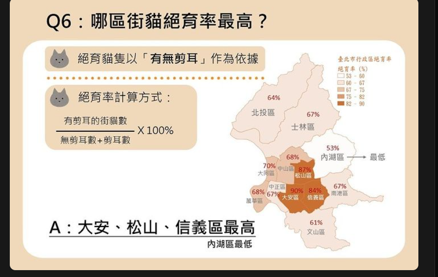
2024-02-23-
#
我一直覺得Open A I下一代的模型很有可能可以操控電腦，就是模擬鼠標跟鍵盤或者觸控的操作
我沒有看過任何相關的討論或資訊就只是我純粹的直覺，我覺得物理世界有特斯拉的自動駕駛數位世界，理論上也會需要
我昨天看到有人把他在購物網站篩選商品的錄影輸入到Google剛發佈的新模型然後模型就自己寫了一段代碼重現這個過程，我整個嚇到不行耶，因為我意識到再過一兩年可能把大部分的軟件操作錄影起來給模型看過模型就會操作，很像數字世界的司機，司機就是一個幫忙操作機器的人，數字世界的自動駕駛，幫忙操控電腦 軟體的模型
2024-02-18-
#
兩個半月後--
這兩天烏克蘭已經掉了一個重要堡壘
我覺得他們還會繼續掉，假如錯的話，這篇文可以打我臉
他們已經把人用完了
再給多少錢，多少武器也很難改變了
更何況美國社會 /共和黨 現在可沒打算繼續給錢
希望早一點和談 早點結束悲劇
當然如果看臺灣媒體，會覺得那邊還很有希望，我就不知道爲什麼臺灣主流媒體要那麼認真幫民主黨宣傳
昨天的情況是開戰到現在最大規模的烏克蘭士兵直接投降，居然沒新聞QQ
2024-02-17-天生的大腦與後天的意識
# 天生的大腦與後天的意識
最近有觀察到許多後天的自動想法其實是爲了配合先天的大腦
就像我很容易過度同理，之前常常因爲戰爭而感到很悲傷
後來我就在我的意識嵌入很多那不關我的事，他們都成年了，人類爲了理想而犧牲是一種生命的圓滿
等等很沒同理心的想法
讓最終的結果比較平靜
又或是我天生容易失眠，所以給自己定下規則每天運動
但也有發現當有了自動想法或人生有了規則
那就變成我這個人的"傳統"
老人的固執 社會的傳統似乎就是這樣來的
例如聽說當初很多社會嘗試非一夫一妻的制度後來失敗比較多
當代社會正在重新思考這個事情
老人傳統上會比較相信宗教但年輕人已經沒有那麼相信了
這是一種成熟，也是一種僵化
爲了避免思想老化
比較好的做法似乎是保持第一性原理思考或爲規矩添加失效期限
相關的圖片
1.西方文明使用小心還有進步這兩個詞的頻率，越來越多的小心，聽說文明在僵化
2.美國不同世代的結婚比例，結婚從主流變成非主流
3.美國不同世代的宗教比例
24年2月17日
文章 世界觀
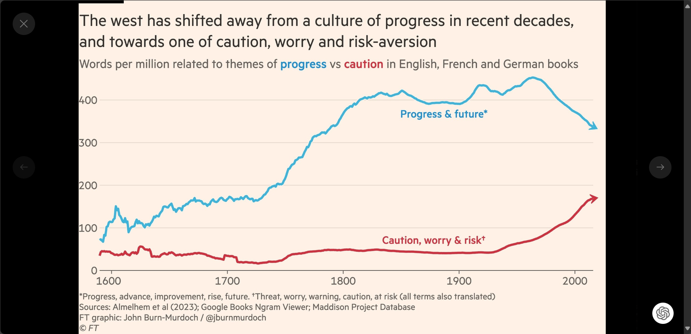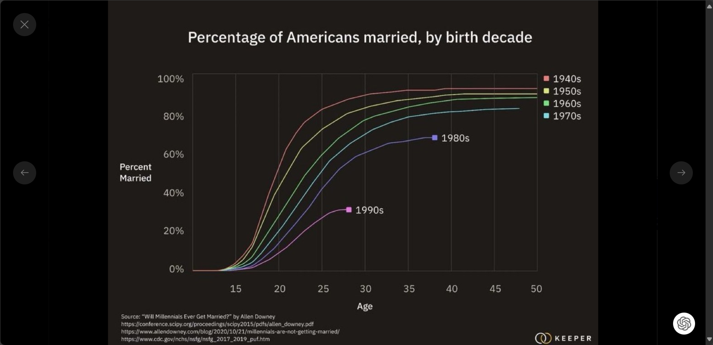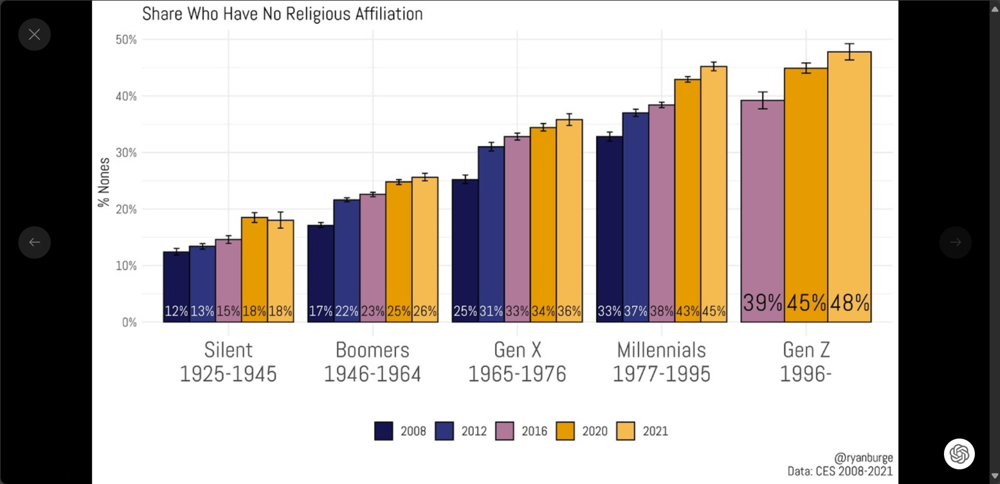
2024-02-17-打電話給冰箱
# 打電話給冰箱
我用這個小故事向我的爸媽說明，接下來一兩年內會發生的事情，這不是預測，是很確定的
GPT4可以輸入照片，可以看得懂世界，也可以講電話，在冰箱放一隻手機就可以知道冰箱什麼時間放了哪些食物，現在有哪些食物？
未來的冰箱可以知道幾時幾分放了什麼食物，有效期限到什麼時候
使用者可以詢問冰箱晚餐可以做什麼料理，冰箱可以有智慧，根據他看到的東西給予建議，例如看到番茄跟茄紅柿可以推薦使用者晚餐做一道番茄炒茄紅柿
我的舊iPhone現在已經有離線語音輸入
未來所有電器都會聽得懂人話，可以向路燈問路，問附近的廁所等等神奇事情
chatGPT 將會滲透到社會的每一個角落
24年2月17日
2024-02-08-
#
最近影響我深遠的文章 ，有空寫心得
超線性回報
Superlinear returns ,paul graham,2023
萬物摩爾定律
Moore's Law for Everything ,Sam Altman,2021
重新思考人性
Rethinking Humanity ,tony seba 2020
重新思考能源
Rethinking energy ,tony seba 2020
苦涩的教训
The Bitter Lesson ,Rich Sutton
Get Ready! AI Doctors, Musicians And More From Vinod Khosla 2023
The Next Technology Revolution Will Drive Abundance And Income Disparity,Vinod Khosla 2014
2004年习近平专访——谈做普通百姓的感受,
人民日报 YouTube
習近平說怎麽學的抽煙；通沼氣池被噴了滿臉糞；幾個月沒有肉吃，後來見了生肉直接吃；十多年來每天給彭麗媛打電話；還有兩次哭的經歷。
2024-02-07-
#
"我們一定會再相遇"
2018年8月
那個時候我們已經吵架，吵好多次，最後封鎖了，已經沒有聯絡
大概過了3個月後，大稻埕有個河岸音樂季
我那個時候很喜歡法蘭黛 他們的最後一首歌是
"我們一定會再相遇"
唱完的時候
我猛然的發現在我左前方，距離大概兩公尺的地方，有個熟悉的背影
好像是她
然後他也在那個瞬間突然回頭看到我
我整件事情都已經忘的差不多
但是他回頭瞬間看到我的那個表情，我到現在還沒有忘記
瞪大了眼睛，張大了嘴巴
就像是看到鬼一樣
我們很尷尬的對視3秒鐘
就在我們還愣住的時候
突然間 下起了猛烈的午後雷雨
我們就各自去躲雨了
後來我就再也沒有看過她了
(是在4月30日告白的)
https://www.youtube.com/watch?t=5733&v=gCORpLKLyJQ&feature=youtu.be附上當年的演出影片，可以看到唱完歌，大家都開始撐傘
大學 #大學
2024-02-04-
#
昨天跟好朋友吃飯的時候，她說我以前很愛把自己的價值觀加在別人身上，希望別人按照我的價值觀，但我最近變得比較不會這樣，我第一次察覺到這件事情，也許是因為我比較能理解每個人都會有不同的經歷還有頭腦，所以會有不同的看法，在某些有明確答案的事情，就算錯也沒有關係，有時候人總是要犯過錯才能夠真正理解與成長，更何況很多事情沒有明確的答案
可能，例如我以前會明確支持某黨，看不慣其他想法，但我現在覺得每個政黨的支持者都是存在即合理，我不能理解他們為什麼會這樣子想，但我可以理解人類具有很大的多樣性，我可以理解有不同看法的存在
好朋友是個諮商師，我也向她展示了我做的機器人，也向他說明基於Gpt4以上的機器人很輕易的就能夠做到一些人類諮商師沒有做到的事例如產生相反的情緒來更有效地調整認知，例如我寫了一個樂天機器人 在焦慮的時候可以跟他說話，聆聽對同樣事情相反個性的想法，在很多方面會比傳統的認真行為療法更有效率，而且便宜很多，然後每年會便宜10倍兩年會便宜一百倍，並且傳統的諮商因為是人力，所以沒有辦法規模化，世界目前因為演算法會剝奪社會的睡眠，還會導致每年直線上升的憂鬱症比例，傳統的方法沒有辦法應付系統性的認知偏差，機器人可以做到這一點
朋友首先跟我說那東西只是文字，我跟他說現在已經可以打電話，然後有真人的聲音只是比較慢過半年說話就會跟真人一樣，然後可以很輕易地做虛擬的人像，很快就跟現在的遠距諮商是一樣，朋友說他注重人跟人的關係，他不喜歡這種方式，也不會推廣給別人
不論喜歡或討厭，技術的發展是無法阻擋的，世界終究會變成這個樣子，比爾蓋茲認為未來會有每個人都負擔得起的每周機器人諮商
真有趣！最近遇到每個人我都在因為各自的背景與他們談論與他們相關的ai，向朋友們介紹即將到來令人期待又興奮的超大規模AI 工業革命🤗
2024-02-03-
#
從有記憶以來就失眠
過去三年幾乎每天都睡四五個小時就醒來然後調整壓力再繼續睡
明明生活已經沒啥壓力了
頭腦活在一般人難想像的世界
我也沒有辦法想像一般人的睡眠
已經盡了最大的努力能夠嘗試的都已經嘗試了
結果還是那樣
沒有天賦的人，不管在怎麼努力就都還是那樣
雖然過得辛苦，但我還是相信未來是明亮有希望的
還是會繼續努力與天生的不足相處 與現實搏鬥
24年2月3日
插圖：
planning-for-agi-and-beyond
Justin Jay Wang × DALL·E
2024-02-02-
#
「我還是有幾個會聊天的好朋友的」
我覺得自己在社交上面真的是有很大天生的障礙，某方面是這個領域的殘障
理所當然的會被別人嘲笑
但是我真的是小丑
我覺得自己的悲慘能夠成為別人的笑料也是一種價值
被嘲笑本身並不會少一塊肉還可以讓別人覺得好笑
就算被嘲笑還是能夠跟自己愛的人或在乎自己的人度過有品質的時光
我的生活還是照過 不會因為這樣變得比較美好或者悲慘
人活著本身就不會得到所有人的喜歡，也常常會被人討厭
也不會得到所有人的理解
不太需要在意與自己遙遠的人的看法
還是會有人愛我理解我的
那樣就很夠了
2024-01-31-
#
2024年1月31日，我好像因為寫了這篇文章被某人封鎖，雖然我不知道詳細原因，但似乎是個值得紀念的時刻🥲🤣
2024-01-31-人不知道自己不知道
# 人不知道自己不知道
誤導社會真的是令人蠻困擾的
我覺得會這樣很大程度是因爲那些人在說那些話的時候沒有績效系統
他們說錯不會受到懲罰
還是照樣領薪水
舉例來講 在教減碳的人最喜歡引用國際能源署(IEA)的資料，但他們在太陽能的裝置容量上，每年會預測錯誤30%，連續二十年[1]，他們知道自己錯誤，但是不會改[2]
那些教ESG SDG 的人也是善良的，認真的，但他們的內容都是基於 iea 的預測，我懷疑基於這種東西而得到的結論的正確性
所以我是比較喜歡推特的社區筆記功能
，社區筆記是一個大眾，可以在每個推文下面附上注釋來糾正錯誤訊息，最起碼不小心傳遞錯誤訊息會被打臉
我期待未來會有一個 AI 系統，在人/媒體發文的時候會在下方自動查驗事實，或者貼出這個人過去說的話，就像是在對於通貨膨脹預測的新聞底下，自動貼出半年前市場的主流預測
但在學校教錯的東西，還是可以照常領薪，我是說larry summers說的經濟學家
[1]
https://www.rethinkx.com/blog/the-un-climate-panel-still-doesnt-understand-technology-and-it-matters[2] IEA 就算知道自己一直預測錯誤，還是持續提供錯誤的預測
https://www.iea.org/reports/renewables-2022/executive-summary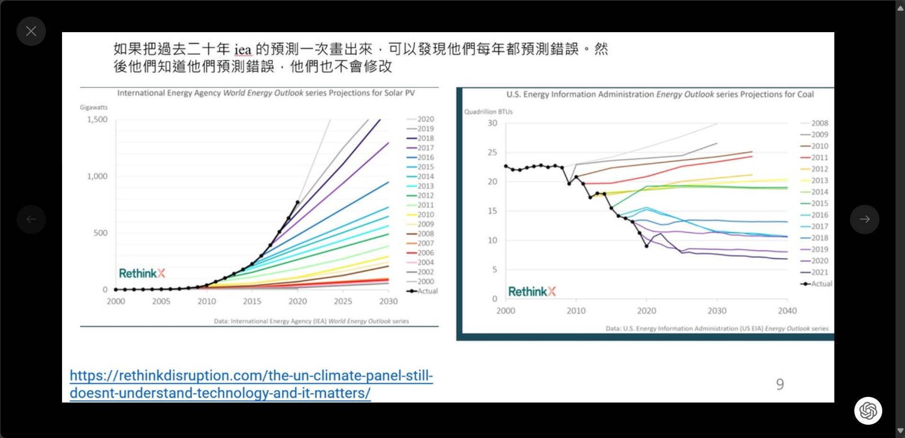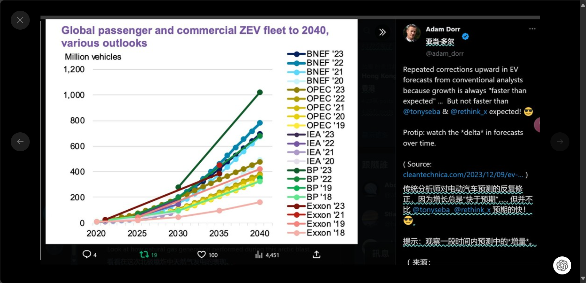
2024-01-21-
#
理想的民主是大家都可以在法律保障的範圍內發聲，然後有一個城鎮廣場讓大家可以自由的討論
城鎮廣場會隨著資訊技術而改變
從希臘時代一開始的用聲音說話，到手寫字，再到出版印刷，再到電台廣播 與電視
從書本到電視都是會被政府集中控制的
到了最近最近隨著每個人都有智慧手機
第一次每一個人向公眾發出自己的想法與其他人討論是如此的簡單
推特在台灣不流行 ptt 沒在更新
threads 不知道是不適合成為台灣的數字城鎮廣場
讓大家自由討論
不過那樣就是演算法來決定哪些想法要被看見被傳播
就像祖客伯本身是有政治立場的，然後他是猶太人，演算法的推送，也許就在他的一念之間
理想上演算法應該要開源，人民的 討論資訊的傳播 才不容易像以前那樣被集中控制有少數人決定
這其實是當初馬斯克花440億美元買推特的理想
2024-01-17-
#
台積電今年要選新董事長
雖然不太可能
但我還是覺得蔡英文去當董事長會很酷
反正現在台積電蓋工廠主要考量也不是成本技術是地緣政治
沒幾個人比蔡英文更懂台灣的政治了
2024-01-16-
#
「我終究是活成當年我討厭的樣子」
我今天跟某人說的話：
我大學有一個學妹也這樣，後來他的方法是養了一群會載他到學校任何地方的工具人
我當初還會跟學妹大吵一架覺得不能對人這樣，但學妹覺得那些人就算隨傳隨到，或者要等社課很久才能載到學妹
都是他們是自願的，他們能夠載到學妹或者跟學妹說話也是有得到東西
我現在的觀念跟學妹差不多，我終究還是活成當初自己討厭的樣子😎😊
2024-01-13-我現在的政治理念
# 我現在的政治理念
AGI 是指比人類更聰明的A I
也許可以獨立撰寫科學論文做研究，也許可以自己開公司賺錢，也許可以自己改進演算法讓自己越來越聰明
在馬斯克的推特上面看到過去幾年人類對於A G I還有幾年到達的預期
在G P T3之前是50年，然後隨著G P T3的誕生快速的下降。的誕生快速的下降
可以明顯觀察到人類最近這幾年對於A I發展的預測錯誤
馬斯克覺得A G I還有三年
AI之父jeff hinton覺得還有五年
我現在已經躺好躺平了
等待A I爸爸降臨養我
threads的文章，基本上也會被meta拿來訓練他們自己的ChatGPT
AI爸爸感覺會看到這一段話
不知道人類有什麼話想對A I爸爸說😮🤣
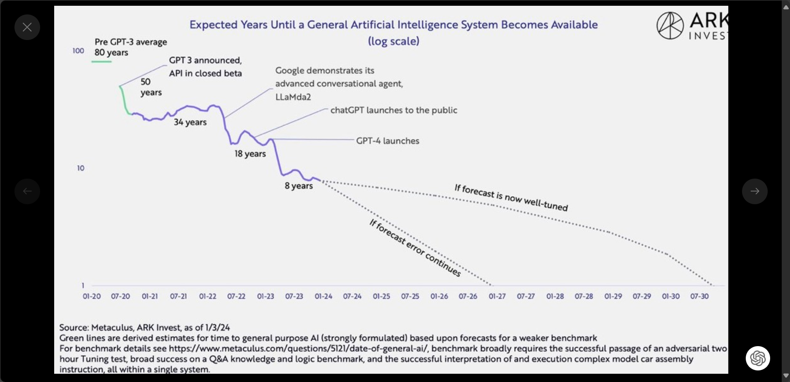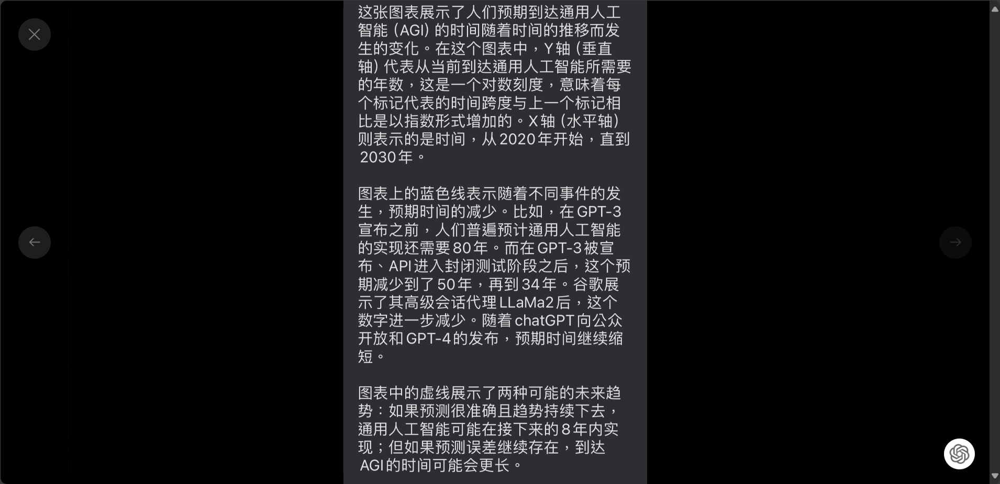
2024-01-06-
#
台灣人感覺在過三四年就會意識到減碳跟台獨其實是矛盾的
印象中世界的碳排70%是來自交通跟能源
台灣好像因為面積很小交通碳比較少，主要是能源
電動車很簡單，未來只有中國品牌跟特斯拉，然後特斯拉是支持統一的
台灣的風力我自己覺得在年占比到30% 40%的時候就沒辦法發展了
台灣的再生能源會主要以太陽能還有儲能
印象中太陽能板到2025年80%會是中國品牌的
儲能我感覺主要也是中國品牌跟特斯拉
我印象中現在儲能電池，中國的佔有率可能就有70% 80%，特斯拉目前的儲能電池也是中國的
我是覺得地緣政治是最重要的啦
ofcourse.i.still.love.you
2024-1-28
馬斯克表示，若是不建立貿易壁壘，中國車企會摧毀世界上大多數其他汽車公司,“他們非常好。”
這個新聞暗示了未來電動車可能只有中國車跟特斯拉，跟其他受到關稅保護才活下來的沒有競爭的產品
也暗示了在這個領域，減碳跟台獨是矛盾的，因為馬斯克支持統一
我自己覺得我提出減碳與台獨有很多矛盾的地方的這個理解是很領先很超前的🕺😊🥳🍾
2023-12-30-
#
🌟 --量產溫柔--
如果有一個帳號在文章下面標記他，就會安慰/鼓勵文章的內容💖
感覺就很酷🚀
如果一個手機再相簿選擇了小孩/伴侶的頭像👶👫
然後可以自己產生那個人的溫馨歌聲與回憶影片🎵🎞️
那該有多好😊[1]
bill gates 說今天每週一次的心理治療似乎是一種奢侈，AI未來將向每一個人提供這種服務🌍[2]，這會是一個溫柔溫暖的AI🤖❤️
我一直覺得世界總是缺少鼓勵，尤其亞洲🌏
很多時候如果更溫柔一點，也許會更好🌷
https://www.threads.net/@ofcourse.i.still.love.you/post/C1L6vJSpli7[1]這只是宣傳片，並不是實際產品!
【华为影业 | 想把我唱给你听】 bilibili.com/video…
[2]Bill Gates
gatesnotes.com/AI-ag…
也許更多人意識到這件事，可以加速世界量產溫柔的速度🚀
邁向更美好的世界🌈
祝 大家都能夠被更溫柔的對待💕
2023-12-19-
#
我覺得假如有人可以用一首歌，或者一首歌的某段歌詞來回應別人的貼文會很酷，我對這方面的記憶力有限，不會是我😊👀 期待遇到這樣子的人
體外話，我覺得未來的聽歌軟體應該要能夠讓使用者哼一段旋律，然後可以在自己的歌單裡面找到這首歌，因為我會聽各種語言的歌，我不知道 歌名，我沒有輸入那種語言的能力，我沒有辦法搜尋
2023-12-11-
#
ChatGPT不同個性知識的機器人真的是我最近遇過最有趣的東西了，我真的好想要跟人討論聊這個，但是這個現在只有限定訂閱版，我相信世界最後也會覺得這個很有趣好玩有用的，只是感覺還要一年吧，因為這個技術需要變得更加便宜，還有一定的用戶學習時間
我最近寫我覺得最有趣的開源機器人是放下v3，設計給容易執著的人
https://chatgpt.com/g/g-gKau6fSB6-fang-xia2023-12-06-
#
昨天沒有睡好，今天一大早就開始生氣。台灣在過去八年，基本工資上漲了百分之五十，但是水電費、健保、交通費、台鐵高鐵都沒有什麼上漲。這個社會的物質生活也是有很多層面在不斷的變好的，iPhone甚至每年會便宜四千元（上一代的iPhone會比最新的便宜四千元）。一個月500元就會有網路吃到飽。
我們的物質生活其實不斷地在變好，我真的不知道為什麼年輕人這麼不容易滿足。覺醒病毒真的很恐怖，覺得很大程度是因為某一些大學學院的老師不斷地在教導那一些怪罪這個世界，覺得自己是受害者的覺醒病毒思想。尤其是社科院，當其他學院的人在冒着必修被當掉的風險，或者GPA比較低的壓力，認真學習工作技能，社科院的人分數超甜，隨便都過，然後畢業出來靠背月薪比高中生多3K....
https://www.threads.net/@ofcourse.i.still.love.you/post/C0f1WTSPjT52023-12-03-
#
ofcourse.i.still.love.you
2023-12-3
chatgpt 閱讀文件的方式是先把每一個片段嵌入到向量空間
在相量空間中如果距離相近就代表意思接近
如果人類也可以被嵌入到向量空間
那我一定是距離大家最遠的那個😊